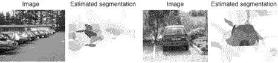

Data
We used six different databases to evaluate our proposed Bayesian
model. Five of them were collected and made publicly available by
other researchers. They are: airplanes, motorbikes,
wildcats, bicycles and
people. The
wildcats database is not publicly available since it was created using
the commercial Corel images database. We created the sixth and final
data set. It consists of photos of parking lots and cars near the
INRIA Rhône-Alpes research centre in Montbonnot, France. The
INRIA car database is available for download here. We now describe how to read in and
use it.
In the root directory, there are two files trainimages and
testimages. Each one contains a list of image names, one per
line. All the images are contained, appropriately enough, in the
images folder with the file names appended with the .jpg
extension.
In addition, we have provided manual annotations of the scenes
which consist of boxes ("windows") that surround the
objects. The files describing the scene annotations are contained in
the objects subdirectory, appended with a .pgm.objects
suffix.
Each line describes a single window and looks like
this:
Object: x y width height
where (x,y) is the top-left corner of the box. Note
that the coordinate system starts at 0, not 1 as in Matlab. Here is a
function
MCMC algorithm for Bayesian classification
We have a C implementation of the Markov Chain Monte Carlo (MCMC)
algorithm for simulating the posterior of the Bayesian kernel machine
classifier given some training data. It was tested in Linux. Here is
how to compile and install the code.
First, you need to install a copy of the GNU Scientific Library
(GSL). Our code was testted with GSL version 1.6. The libraries should
be installed in the directory $HOME/gsl/lib and the header
files in $HOME/gsl/include, and the variable $HOME must
be entered correctly in the Makefile (see below). In addition, if you
use the gcc compiler in Linux you have to set the path to include the
installed libraries with the command
setenv
LD_LIBRARY_PATH $HOME/gsl/lib
Next, you're ready to install the ssmcmc package. "ssmcmc" stands
for "semi-supervised MCMC." As mentioned, you have to edit
the file Makefile and make sure that the HOME variable
points to the right directory. Once you're in the ssmcmc
directory, type make, and after a few seconds you should have
a program called ssmcmc. Running the program without any input
arguments gives to the help. We give a brief tutorial explaining how
to use the program.
In order to train the model on some data, you need a few
ingredients. First, you need some data in the proper format. We've
made a sample training set available
for download. In fact, this particular data set was used for many of
our experiments. It was produced by extracting Harris-Laplace interest
regions from the INRIA car data set (an average of 100 regions per
image) then converting them to feature vectors using SIFT. The format
of the data is as follows:
- The first line gives the number of documents (images).
- The second line gives the dimension of the feature vectors.
- After that there's a line for each document (image) in the data
set. Each line has two numbers. The first gives the image caption. It
can either be 1 (all the points in the document are positive, which
almost never happens in our data sets), 2 (all the points in the
document are negative, which happens when there is no instance of the
object in the image), or 0 (the points are unlabeled, which happens
when there is an instance of the object in the image). The second
number says how many points (extracted interest regions) there are in
the document.
- The last part of the data file, and the biggest, is the data
points themselves. There is one feature vector for each line. The
first number is the true label --- this is only used for evaluation
purposes and is not available to the model. The rest of the numbers
are the entries that make up the feature vector.
Suppose you have your data set available. Next, you need to specify
the parameters for the model in a text file. A sample parameters file
looks like this:
Put comment here.
ns: 1000
metric: fdist2
kernel: kgaussian
lambda: 0.01
mu: 0.01
nu: 0.01
a: 1.0
b: 50.0
mua: 0.01
nua: 0.01
epsilon: 0.1
nc1: 30
nc2: 0
Most of the parameters above are explained in the journal paper
submission and technical report. ns is the number of samples to
generate. There is only one possible distance metric and kernel, but
they must be specified anyway. lambda is the kernel scale
parameter and epsilon is the stabilization term on the
covariance prior.
The parameters nc1 and nc2 specify the minimum number
of positive labels and the minimum number of negative labels in a
training image, respectively, so this obviously specifies a
constrained data association model. In this case, the constraints
require that at least 30 interest regions in a training image be
labeled as positive. Alternatively, one can specify data association
problem using group statistics, in which case the last two lines are
replaced by something like
m: 0.3
chi: 400
Once the model parameters are specified, you can finally train the
model with the following command:
ssmcmc -t=params -v carhartrain model
We're assuming here at that the parameters file is called
params. The result is saved in the file model. Once
training is complete (it might take a little while), you can use the
model to predict the labels of interest regions extracted from any
image, including this The function crflocalize requires the optimized Matlab
implementation of the random schedule tree sampler, bgsfast. Once
you have downloaded and unpacked the tar ball, follow these steps:
Here are a couple of localization results for the cars database.

Publications
Hendrik Kück and Nando de Freitas. Learning
to classify individuals based on group statistics. Conference on
Uncertainty in Artificial Intelligence, July 2005.
Peter Carbonetto, Gyuri Dorkò and Cordelia Schmid. Bayesian learning for weakly supervised
object classification. Technical Report, INRIA Rhône-Alpes,
July 2004.
Hendrik Kück, Peter Carbonetto and Nando de Freitas. A Constrained semi-supervised learning approach
to data association. European Conference on Computer Vision, May
2004.
This webpage was last updated on August 13, 2005.
Home.